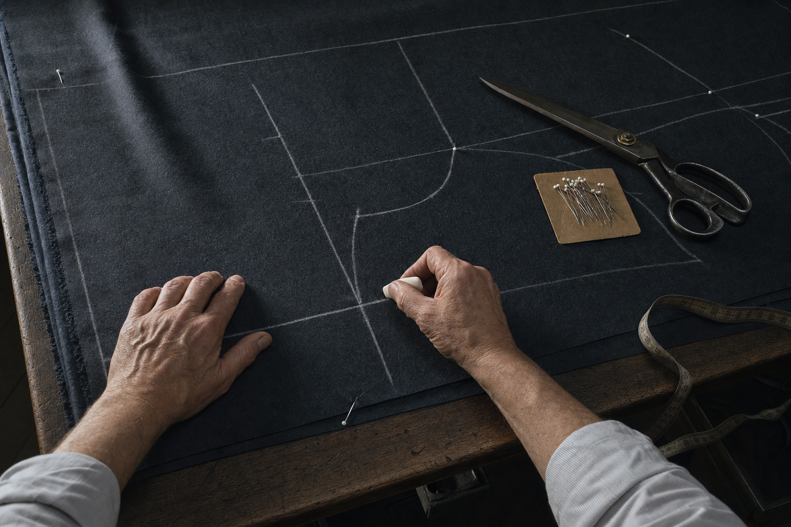
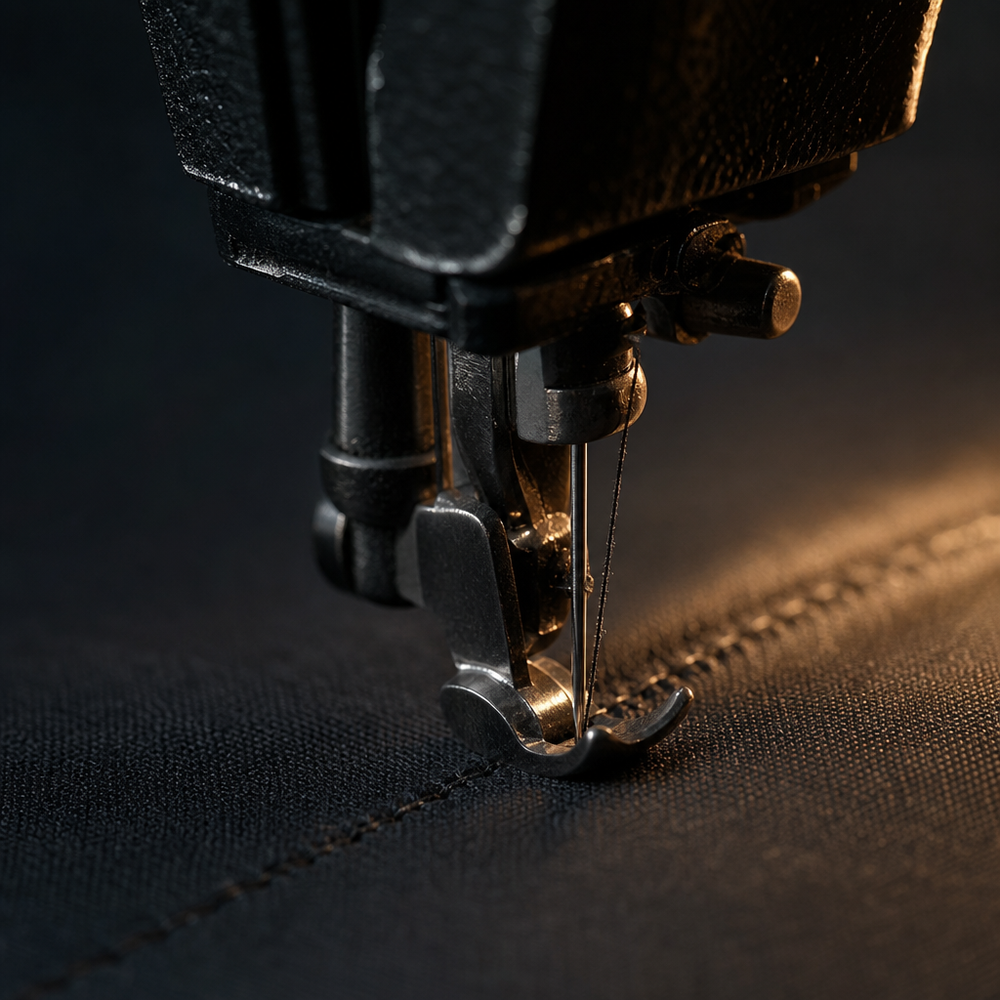
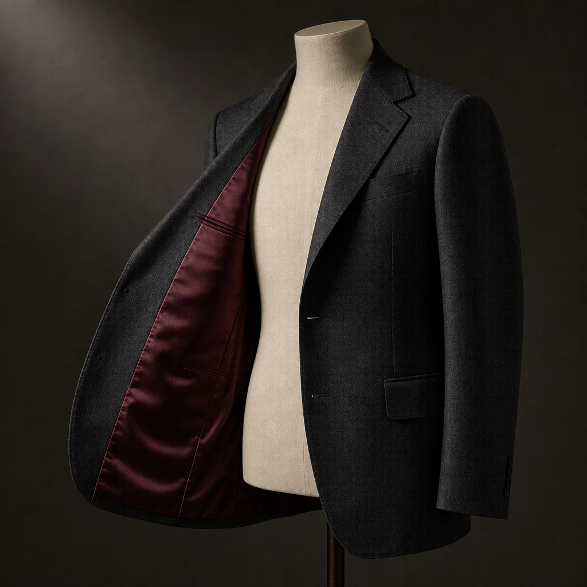
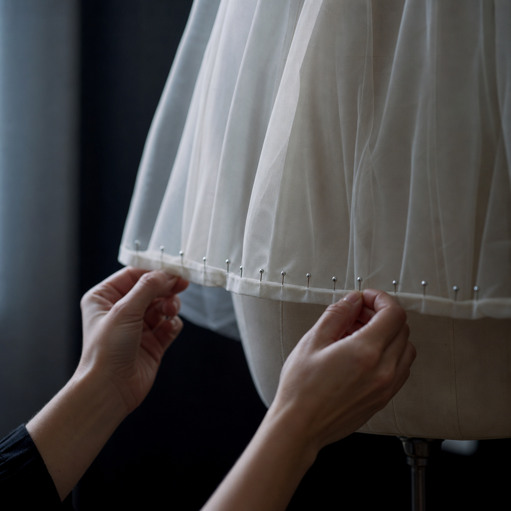

Emailed at 11 pm. Finished the next afternoon.
"I had to find a replacement gown 48 hours before my event. They were able to see me the next morning and my gown was ready for me to pick up just a few hours later. The dress had 3 layers, the top being chiffon. The hem was better than the original."
Emmaline D., in her own review. We did not write that, and we cannot promise that week for every garment. Bring it in and we will tell you honestly.
What we will take that other shops turn away
Hardest first-
Leather & Suede
Jackets, skirts, trousers, linings By quote -
Gowns & Bridal
Chiffon, tulle, beading, trains, multi-layer hems Rush sometimes possible -
Uniforms
Technical and service fabrics, including firefighter kit By quote -
Clothing Restoration
Vintage, damaged, inherited, recreated from a pattern By quote -
Custom Drapery
Home curtains, linings, restyling, soft furnishings By quote -
Suits & Formal
Jackets, trousers, tapering, restyling, resizing Usually a few days -
Everyday & Denim
Hems, zips, patching, mending, children's clothing Often the same week




Reviews, quoted as our customers wrote them
"Jin and Bona have redesigned many of my clothes from blouses, jackets, pants and dresses. They are very meticulous and have a great eye for design. They are very professional and provide great suggestions to alter my garments."
Sy S.
"They are real professional custom tailors. I know so because my father used to own a high-end custom tailor shop. I highly recommend this tailor shop. Their price is very good for the quality as well."
Eric J.
"I bought a size 6 wedding dress and needed it to be altered to size 2. The dress had delicate beadings with a long train so I was a little nervous at first, but they did an absolutely wonderful job and it was done so perfectly that you couldn't even tell it was tailored."
Jen K.
Jin & Bona
Jin and Bona have worked in this trade for decades. While working for other businesses in the area they kept meeting the same gap: nobody nearby would take on customised alteration and repair work, so difficult garments went home unfixed. They opened OK Custom Tailor & Home Deco to be the shop that says yes.
From formal dresses and wedding gowns to men's suit alterations and customised apparel tailoring, the answer is usually that it can be done. Bring the garment in and they will tell you what is possible before you commit to anything.
Home Deco
The second half of the name is a second business, and most people never find it. The same hands that take in a jacket make and alter custom drapery: curtains, linings, restyling and repairs for the house rather than the wardrobe.
It is the same skill applied to much larger pieces of cloth, and it is worth asking about if you have windows that never quite got finished.
Come in
7536 Gardner Park Dr
Gainesville, VA 20155
Walk-ins welcome. No appointment needed.
Or ask first
If you are not sure whether something can be saved, send a photograph and a note about the deadline. Difficult material and short notice are the two things worth asking about before you drive over.